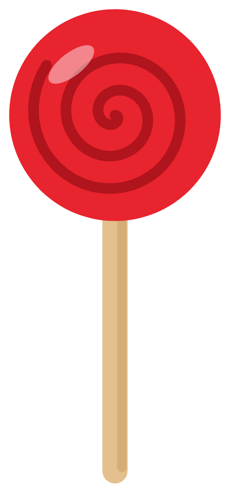
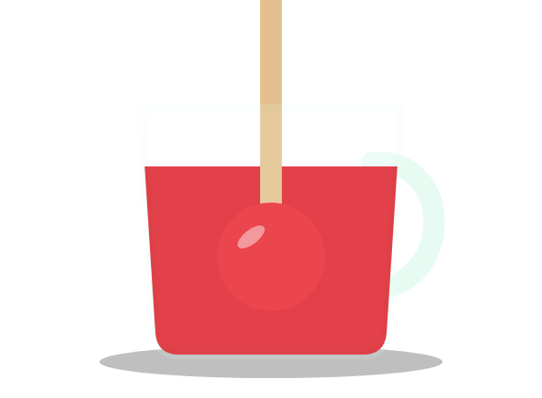

Tee am Stiel.
TeaPop ist Tee in Lolli-Form. Einfach in heißes Wasser tauchen, umrühren – und der Tee löst sich komplett auf. Ganz ohne Teebeutel.
Sorten entdeckenTeaPop ist Tee in Lolli-Form. Einfach in heißes Wasser tauchen, umrühren – und der Tee löst sich komplett auf. Ganz ohne Teebeutel.
Sorten entdecken
Ideal für Büro, Uni und unterwegs – überall, wo es heißes Wasser gibt.
Kein nasser Beutel, der über den Tisch tropft. Nichts kleckert mehr.
Ein Stiel aus Holz statt Plastik – und kein Teebeutel, der weggeworfen werden muss.
Ein Pop ergibt genau eine Tasse.
Mehr braucht es nicht. Der TeaPop löst sich in der Tasse vollständig auf – übrig bleibt nur der Holzstiel.
So geht's genau